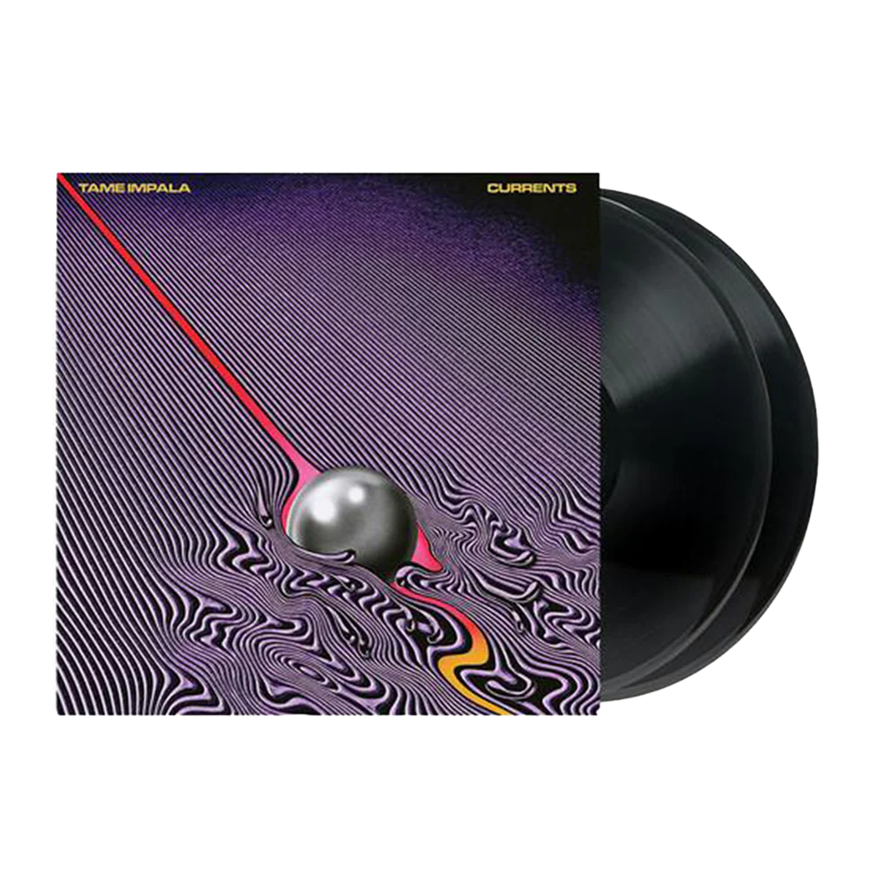
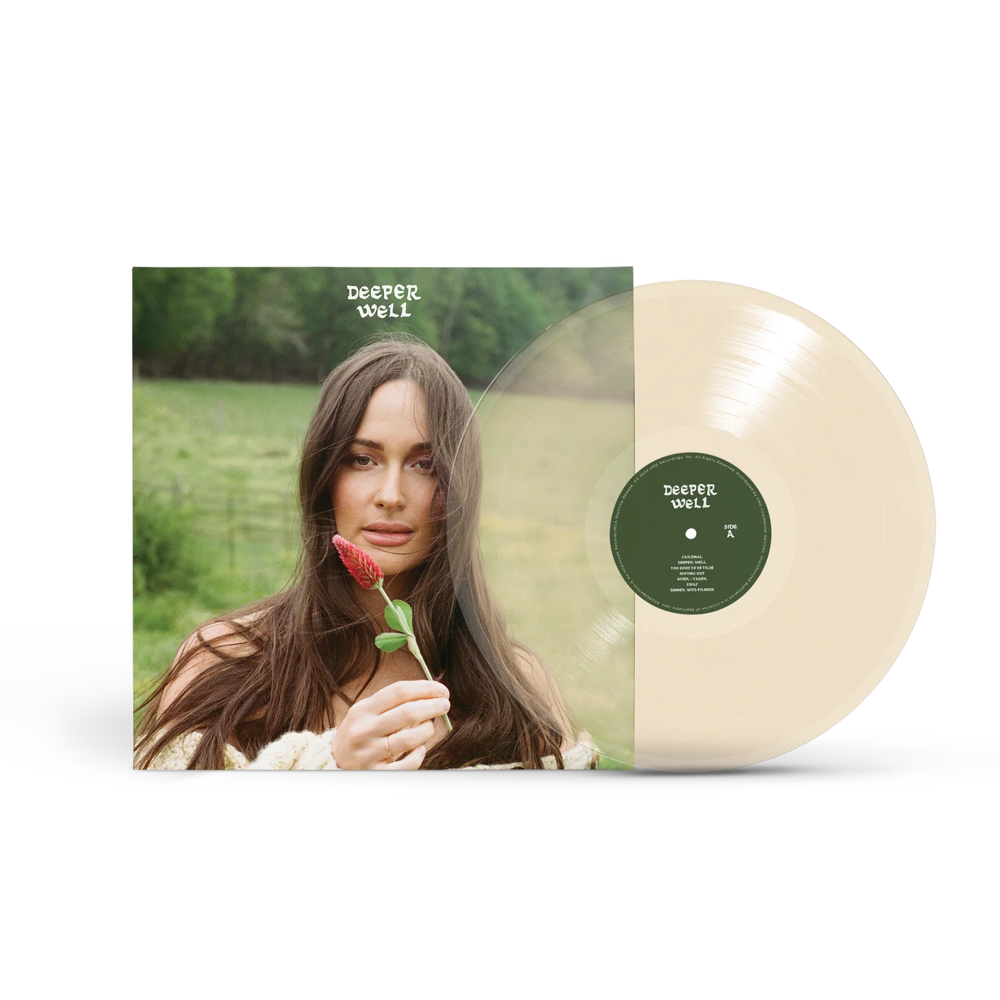
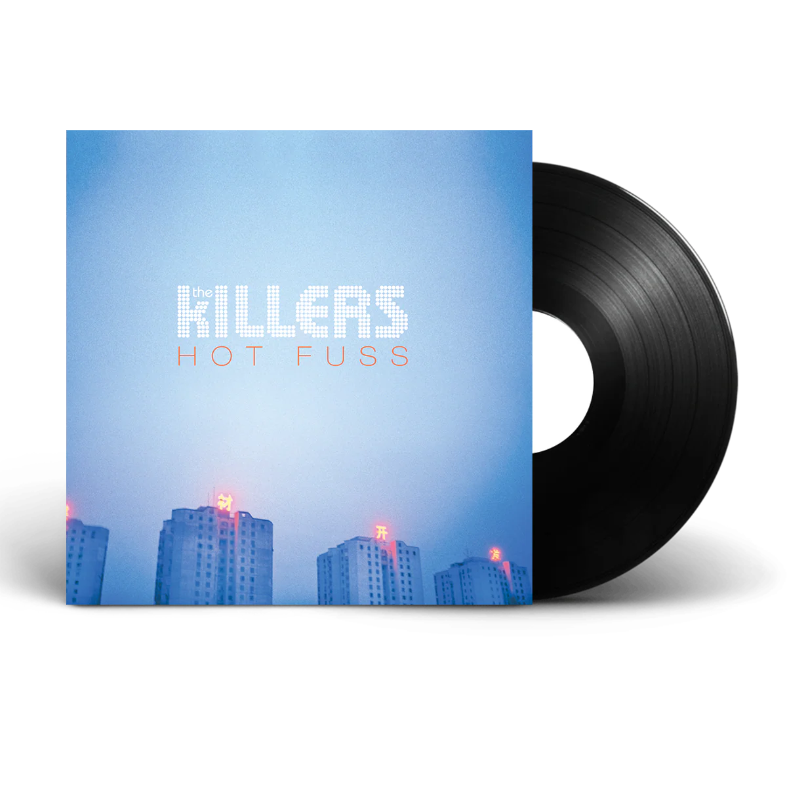
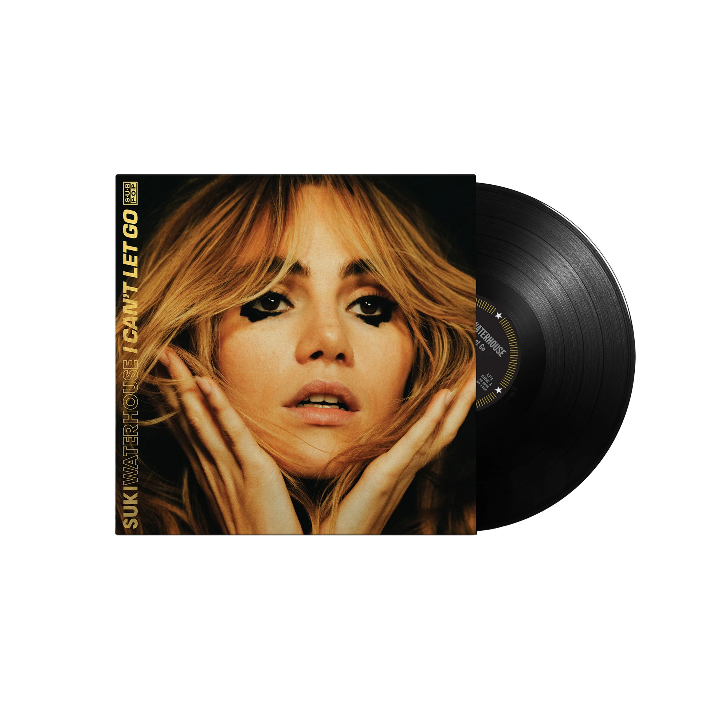

Sabrina Carpenter – Man's Best Friend

This is my basic personal webpage created for my digital humanities class. On this page you can find my current favorite albums and the links to them.If you click on the image of the albums it will take you to my favorite music video from that album. This page features a variety of genres from pop to rock, to indie to folk. Enjoy!!!





